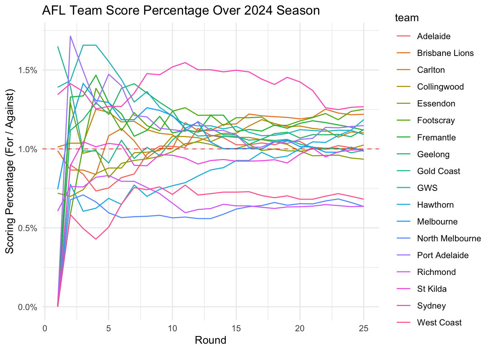
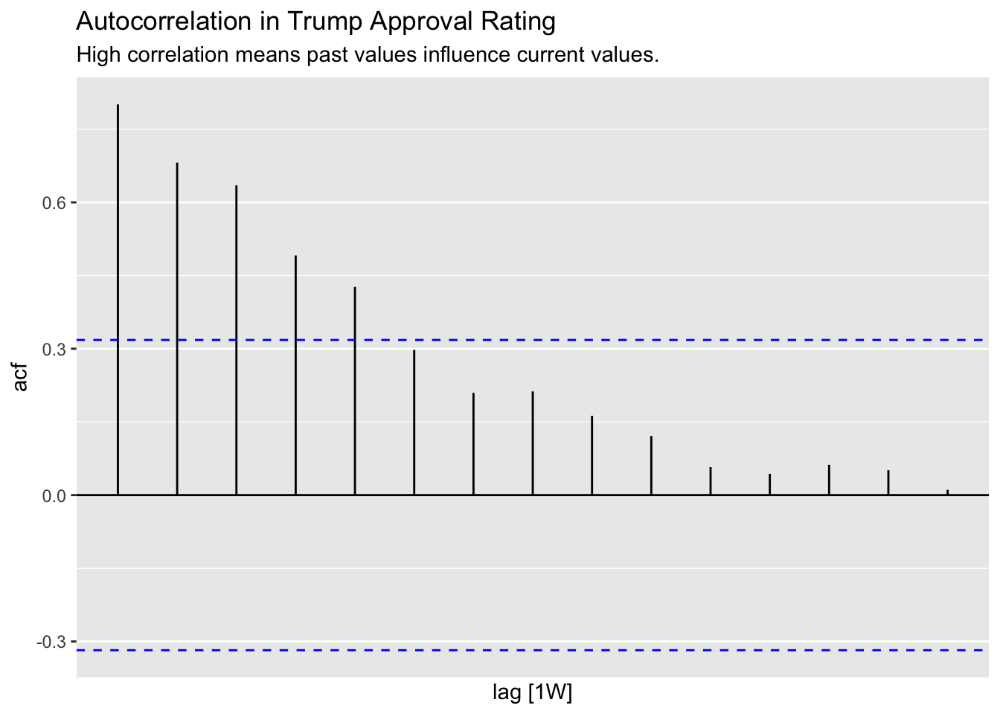
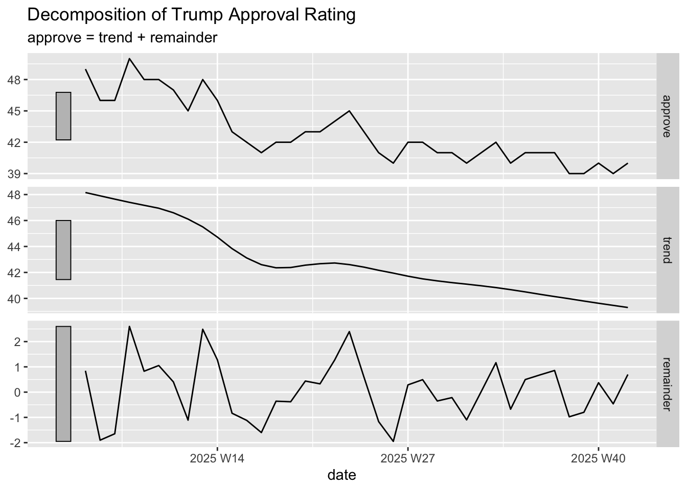
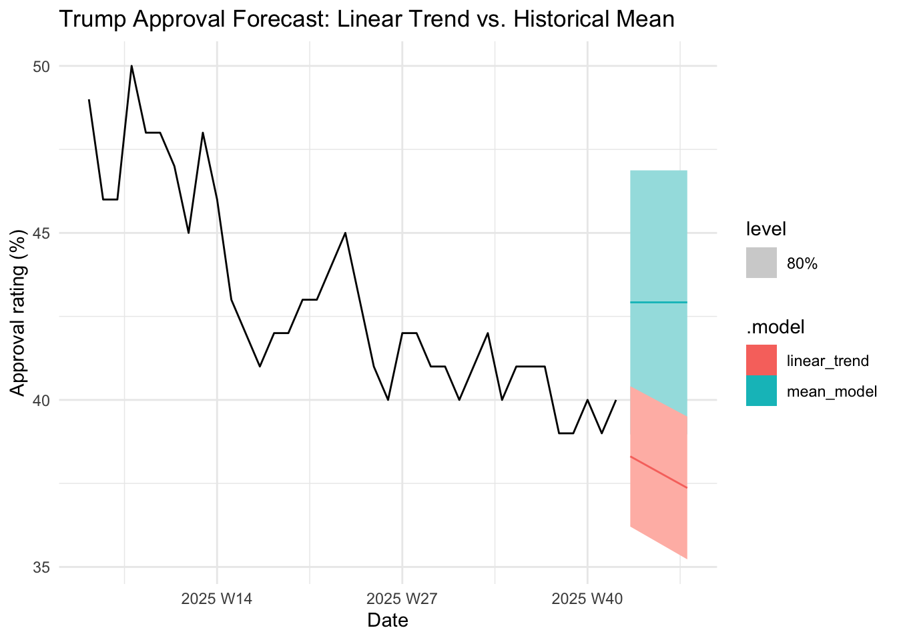

library(tidyverse)
library(tsibble)
library(fable) # Core modeling framework
library(feasts) # Feature extraction and diagnostic tools
library(ggtime) # For advanced time series plots3 The Toolkit: R for Time Series
You are already proficient with R and the tidyverse, which gives you a powerful foundation for data manipulation. However, time series data are special. Unlike a standard dataset where each row is independent, in a time series, the order matters. A value today is highly dependent on the value yesterday.
To handle this dependency and make forecasting efficient and error-free, the R community has developed a specialized ecosystem of packages collectively known as the fable framework.
This chapter introduces the four core tools you will use in this course:
tsibble: The specialized data structure for time series.feasts: The toolkit for diagnosing and visualizing time series patterns.fable: The engine for fitting models and generating forecasts.ggtime: The visual layer for making beautiful time series plots.
3.1 The Foundation: The tsibble Object
3.1.1 Why a tsibble?
A standard tibble or data.frame treats columns like date or week as just text or numbers. A tsibble (Time Series Tibble) is a smart data structure. It forces you to define what is being measured and when it was measured. It automatically flags missing time points, helps manage multiple concurrent time series, and ensures your models treat the data’s time dependency correctly.
3.1.2 Indexes and Keys: The DNA of a tsibble
Every tsibble has two defining features:
3.1.2.1 The Index (The When)
The index is the column that specifies the time point of the observation. The tsibble package provides several helper functions to convert standard dates/times into time-aware indices:
| Frequency | Function | Example |
|---|---|---|
| Yearly | year() |
year(2025) |
| Quarterly | yearquarter() |
yearquarter(2025 Q3) |
| Monthly | yearmonth() |
yearmonth(2025 Oct) |
| Weekly | yearweek() |
yearweek(2025 W42) |
Let’s use the provided political science data to demonstrate. We convert the date column into a weekly index using yearweek() and then convert the entire tibble into a tsibble.
# Load a standard tibble of Mr. Trump's approval ratings
trump_approval <- read_rds(here::here("data", "trump_approval.rds"))
trump_approval# A tibble: 38 × 2
date approve
<date> <dbl>
1 2025-10-13 40
2 2025-10-06 39
3 2025-09-29 40
4 2025-09-22 39
5 2025-09-08 41
6 2025-09-02 41
7 2025-09-15 39
8 2025-08-04 41
9 2025-08-25 41
10 2025-08-18 40
# ℹ 28 more rows# Convert it to a tsibble, setting the index explicitly
trump_approval_ts <- trump_approval |>
mutate(date = yearweek(date)) |>
as_tsibble()
trump_approval_ts# A tsibble: 38 x 2 [1W]
date approve
<week> <dbl>
1 2025 W05 49
2 2025 W06 46
3 2025 W07 46
4 2025 W08 50
5 2025 W09 48
6 2025 W10 48
7 2025 W11 47
8 2025 W12 45
9 2025 W13 48
10 2025 W14 46
# ℹ 28 more rowsNotice how the tsibble output clearly labels date as the Index and immediately tells us the data is collected weekly.
3.1.2.2 The Key (The What)
In many forecasting projects, you deal with multiple, independent time series simultaneously (e.g., all 30 NBA teams, or all 50 US states). The Key is the column that identifies which individual series each observation belongs to.
The Australian Football League (AFL) data provides a great example. We want to track 18 different teams over the season’s 25 rounds.
# Load data on each AFL team's performance
afl_ladder <- read_rds(here::here("data", "afl_ladder.rds"))
# Convert to a tsibble, defining 'team' as the key and 'round_number' as the index
afl_ladder_ts <- afl_ladder |>
as_tsibble(key = team, index = round_number)
afl_ladder_ts# A tsibble: 450 x 8 [1]
# Key: team [18]
season team round_number season_points score_for score_against percentage
<dbl> <chr> <int> <dbl> <dbl> <dbl> <dbl>
1 2024 Adelaide 1 0 0 0 0
2 2024 Adelaide 2 0 54 60 0.9
3 2024 Adelaide 3 0 131 156 0.840
4 2024 Adelaide 4 0 165 225 0.733
5 2024 Adelaide 5 0 228 303 0.752
6 2024 Adelaide 6 4 328 401 0.818
7 2024 Adelaide 7 4 403 479 0.841
8 2024 Adelaide 8 8 541 560 0.966
9 2024 Adelaide 9 12 619 608 1.02
10 2024 Adelaide 10 14 709 698 1.02
# ℹ 440 more rows
# ℹ 1 more variable: ladder_position <int>The output now shows Key: team [18], meaning we have 18 unique time series bundled together. This allows us to run one single model command to fit 18 separate models—one for each team!
3.2 Visualizing and Diagnosing: feasts and ggtime
Before modeling, you must understand the pattern of your data. The feasts package (Feature Extraction and Statistics for Time Series) and the ggtime extension for ggplot2 make this diagnosis easy. We’ll cover the interpretation of these plots and models in depth later; for now, focus on running the code to see what tools are available.
3.2.1 Visualization with autoplot and ggtime
The autoplot() function, adapted from ggtime, is the quickest way to visualize a tsibble.
autoplot(trump_approval_ts, approve) +
theme_minimal() +
labs(title = "Trump Approval Rating",
x = "Date",
y = "Approval rating (%)") +
scale_y_continuous(limits = c(0, 100))
This plot immediately reveals the central trend: a declining trajectory.
When dealing with grouped data (like the AFL teams), autoplot automatically plots every series, making comparisons easy:
autoplot(afl_ladder_ts, percentage) +
geom_hline(yintercept = 1, linetype = "dashed", color = "red", alpha = 0.6) +
theme_minimal() +
labs(title = "AFL Team Score Percentage Over 2024 Season",
x = "Round",
y = "Scoring Percentage (For / Against)") +
scale_y_continuous(labels = scales::percent_format(scale = 1))

The plot shows 18 individual lines, allowing us to immediately see which teams (like the Sydney Swans, consistently above 100%) were successful and which (like North Melbourne, consistently below 100%) struggled.
3.2.2 Diagnostic Tools with feasts
The most critical diagnostic plot in time series is the Seasonal Plot and the ACF (Autocorrelation Function) Plot.
- Autocorrelation Function (
ACF): This plot tells you how correlated the variable is with its past values (lags). If the approval rating today is highly correlated with the approval rating 5 weeks ago, the ACF plot will show a strong spike at “Lag 5”. This helps us identify hidden dependencies and seasonality.
# Use ACF to check for dependencies
trump_approval_ts |>
ACF(approve) |> # Calculate the AutoCorrelation Function
autoplot() +
labs(title = "Autocorrelation in Trump Approval Rating",
subtitle = "High correlation means past values influence current values.")
The initial spikes in the ACF plot tell us that approval ratings are highly correlated with the immediately preceding weeks, which is expected.
- Decomposition: Many series have a Trend (the long-term movement), a Seasonality (a repeating, predictable pattern, like higher sales in December), and a Remainder (the random noise). The
feastsfunctionmodel(which usesdecomposition_model) helps separate these components, which is essential for accurate modeling.
Let’s use the model function with STL() (Seasonal and Trend decomposition using Loess) to visualize these components:
# Decompose the time series into its components
trump_approval_ts |>
model(
decomposition = STL(approve) # Use STL to separate trend, seasonality, and remainder
) |>
components() |> # Extract the components
autoplot() +
labs(title = "Decomposition of Trump Approval Rating")
The resulting plot shows four panels: the original observed data, the estimated Trend (the smooth, long-term movement), the Seasonal component (the weekly pattern, if any), and the Remainder (the residual noise not explained by trend or seasonality).
3.3 The Engine: The fable Package
The fable package is the core modeling engine. It uses a clean, three-step pipeline that aligns perfectly with the tidyverse philosophy: model() -> forecast() -> autoplot(). Like decomposition, we will dive deep into specific forecasting models later. For now, focus on the workflow—how to fit a model, generate a forecast, and visualize the result.
3.3.1 Step 1: model() - Fitting the Model
The model() function takes a tsibble and specifies the model(s) you want to fit using a formula. The output is a special mable (Model Table) object.
We can fit the simple linear trend model we saw in the last chapter using the TSLM() (Time Series Linear Model) function:
fit_approval <- trump_approval_ts |>
model(
linear_trend = TSLM(approve ~ trend()),
# We can fit multiple models at once!
mean_model = MEAN(approve)
)
fit_approval# A mable: 1 x 2
linear_trend mean_model
<model> <model>
1 <TSLM> <MEAN>The mable object now holds two fully trained models ready for forecasting.
3.3.2 Step 2: forecast() - Generating Predictions
The forecast() function takes the mable object and tells it how far into the future (the horizon, or h) to predict.
# Forecast approval ratings 5 weeks into the future
approval_forecast <- fit_approval |>
forecast(h = "5 weeks")
approval_forecast# A fable: 10 x 4 [1W]
# Key: .model [2]
.model date
<chr> <week>
1 linear_trend 2025 W43
2 linear_trend 2025 W44
3 linear_trend 2025 W45
4 linear_trend 2025 W46
5 linear_trend 2025 W47
6 mean_model 2025 W43
7 mean_model 2025 W44
8 mean_model 2025 W45
9 mean_model 2025 W46
10 mean_model 2025 W47
# ℹ 2 more variables: approve <dist>, .mean <dbl>The output is a fable object (Forecast Table). Notice it provides the .mean (the point estimate) and a distribution for the prediction, allowing us to calculate the Prediction Interval (the range of plausible future values).
3.3.3 Step 3: autoplot() - Visualizing the Forecast
Finally, we plot the forecast using the original data and the autoplot() function.
# Plotting the forecast table automatically includes the original data
approval_forecast |>
autoplot(trump_approval_ts, level = 80) + # Show an 80% prediction interval
theme_minimal() +
labs(title = "Trump Approval Forecast: Linear Trend vs. Historical Mean",
x = "Date",
y = "Approval rating (%)")

The resulting plot clearly shows the declining linear trend model and the flat line of the historical mean model, along with their respective 80% uncertainty cones (the shaded region). This visual comparison is the most powerful way to evaluate your models before deployment.
By mastering the tsibble, feasts, and fable pipeline, you gain a robust, modern, and efficient set of tools to tackle nearly any time series forecasting challenge, whether in political science or sports analytics.